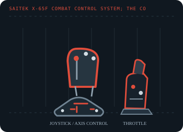

[ JOYSTICK CONTROLLERS // IDENTIFIED COMPONENT ]
Saitek X-65F Combat Control System
Force-sensing PC HOTAS with a stationary pressure-responsive stick, twin throttles and a separate switch panel.

MODEL IDENTIFICATION: Saitek X-65F Combat Control System; the control-system name is printed on the stick/throttle hardware. Published family information does not establish the revision or condition of an individual unit; compare its label and included parts with the linked documentation.
Model specifications
| Catalog subcategory | Joystick controllers |
|---|---|
| Exact model / identifier | Saitek X-65F Combat Control System; the control-system name is printed on the stick/throttle hardware. |
| Axes and buttons | Non-moving force-sensing stick for aileron/elevator, rudder input, dual throttle levers, two rotary controls, configurable hats and panel switches; mode/profile software expands button assignments. |
| Physical interface | PC USB link from the throttle/panel assembly; internal PS/2-style cables connect the stick and switch panel to the throttle. Do not mistake those internal links for host ports. |
| Sensors and protocol | Force sensors measure applied stick pressure instead of gimbal travel; throttle, rudder and rotary axes report conventional analog positions. Button and axis data are exposed through the PC controller interface. |
| Power | USB-powered from the PC or a powered USB hub, as specified by Logitech; retain the original cable arrangement and avoid overloading a passive hub. |
| Host OS and driver compatibility | Designed for Windows flight simulators. Logitech documents testing with Windows XP and Windows 7; Smart Technology (ST) programming software and legacy profile support are OS-dependent. |
Setup and calibration
Connect the stick and panel to their labeled PS/2 sockets on the throttle before connecting the PC USB lead. In Game Controllers properties, test axis pressure and adjust force sensitivity/dead zones, then map dual throttles separately.
Keep the operating-system baseline calibration and in-game sensitivity/dead-zone settings separate. Record the OS, driver, firmware and game used to test each axis and button.
Preservation and service notes
Because the stick is fixed, do not try to free or lubricate it like a gimbal. Check the cable labels, six-pin PS/2 connectors, adjustable hat layout and mode switch before powering.
For an archive specimen, photograph the model label, note all included cables/adapters and distinguish directly observed behavior from published specifications.
References and support
- X-65F Combat Control System installation — Logitech SupportManufacturer connection, force-sensing and Windows calibration instructions.
- Set up the X-65F with Microsoft Flight Simulator — Logitech SupportManufacturer mapping notes for the aileron, elevator, rudder, dual throttles and rotaries.
Vendor support pages and manual downloads can change. Preserve the applicable manual and installer with a legacy host image, and verify the printed revision before service.